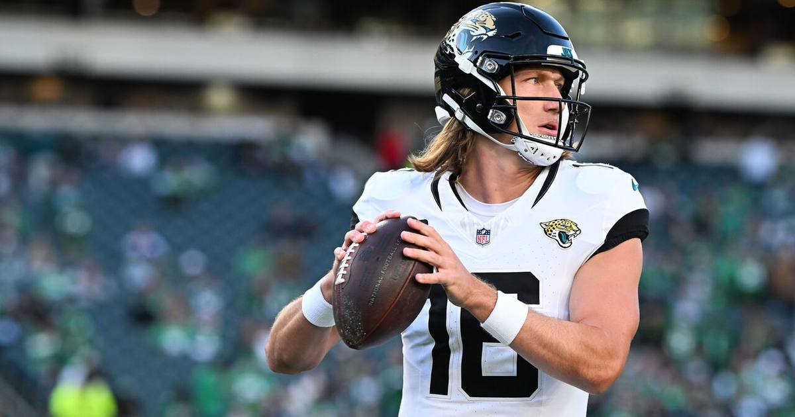

Jaguars -10 (-110): A 10-point favorite against a third-string rookie quarterback
Baltimore is starting an undrafted rookie at quarterback, has lost three straight, and hasn't topped 13 points in three games. Jacksonville just won 42-7. Laying 10 on the road is a lot — but this Ravens team is that broken right now.

Game slip
Jacksonville Jaguars (5-2) at Baltimore Ravens (4-4)
Thursday, November 5, 2026 — 8:15 PM ET — M&T Bank Stadium, Baltimore, MD — Prime Video
Spread: Jaguars -10 (-110)
Total: 39.5
Moneyline: Jaguars -535 / Ravens +415
Odds source: DraftKings, via Fantasy Alarm, updated Nov. 5, 5:40 AM ET; consensus via The Sport Stack, Nov. 5, 6:40 AM ET
### Injury report
Jacksonville: RB Bhayshul Tuten (ankle/foot) — questionable, game-time decision. DE Travon Walker (rib) — questionable. S Eric Murray and DT DaVon Hamilton — season-ending IR. S Antonio Johnson — cleared, available.
Baltimore: QB Lamar Jackson (thumb) — OUT, surgery, injured reserve, possibly season-ending. QB Tyler Huntley (toe) — OUT for the season, turf toe surgery. S Jaylinn Hawkins (knee) — OUT. CB Nate Wiggins (stinger/illness) — questionable. QB Joe Fagnano (ankle) — full participant, no designation, starting his first NFL game.
### Storylines
• This line opened at Baltimore -3. It is now Jacksonville -10. A 13-point move tells you everything about what the market thinks of a Ravens team on its third quarterback.
• Jacksonville just beat Indianapolis 42-7, with Trevor Lawrence going 10 of 14 for 210 yards and 3 touchdowns. The Jaguars have won four of their last five.
• Baltimore has lost three straight and has not topped 13 points in any of them. The Ravens sit 30th in yards per play over that span.
• Jacksonville's defense is second in the NFL in points allowed per game. It just held the Colts to seven points.
• Fagnano gets a full week of practice reps this time — he had none before the Buffalo game — but a full week does not turn an undrafted rookie into a starting NFL quarterback on a short week against this defense.
The bet
Jacksonville Jaguars -10 (-110, DraftKings)
Why
Sometimes the obvious play is obvious for a reason. The Ravens are starting a quarterback who completed 10 of 21 passes for 91 yards against one of the worst defenses in the league last week, and now he faces one of the best. Baltimore's offense has scored 13 points or fewer in three straight games with better quarterbacks than the one playing tonight.
Jacksonville does not need to be spectacular here. It needs to be competent. The Jaguars' defense should keep Baltimore in the teens at most, and an offense that just scored 42 points — with a quarterback completing 65.7 percent of his passes for 17 touchdowns against 4 interceptions this season — only needs two or three clean drives to cover this number.
The honest caveat
Ten points on the road on a Thursday night is a big number, and there are real ways this goes wrong. Fagnano is better prepared this week than he was against Buffalo. Bhayshul Tuten is a game-time decision, but if he plays, Jacksonville's run game keeps the clock moving and shortens the game. And a big Jacksonville lead means a conservative second half — the Jaguars led 42-7 last week with Lawrence throwing only 14 times, which is exactly the kind of game state that lets a backdoor cover sneak in. If you want a safer way to play this game, the Henry under is the cleaner bet. This one is the conviction play.
The pick
Jaguars -10 (-110, DraftKings). The Ravens are broken at quarterback, and the Jaguars are the wrong team to be broken against.
If you or someone you know has a gambling problem, call 1-800-GAMBLER.
Sources
• Jaguars vs. Ravens Predictions, Picks & Odds: NFL Week 9 Thursday Night Football (Fantasy Alarm)
• Jaguars vs Ravens Prediction 11/5/2026 (PickDawgz)
• NFL Picks Against the Spread: Week 9, 2026 (WalterFootball)